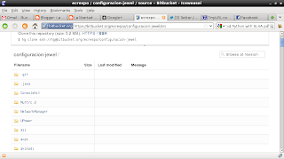

Gestionar los archivos de configuración en /etc con etckeeper y mercurial
Posted on mié 27 julio 2011 in Tutorial de Linux • 6 min read
Continuando con los artículos de control de versiones distribuido con Mercurial ahora toca el respaldo y guardar las versiones de los archivos de configuración en /etc con etckeeper.
La mayoria de los artículos que se consiguen sobre etckeeper es usando git o bazaar.
Para esta guía es necesario tener conocimientos básicos de mercurial, pueden leer el artículo de control de versiones con mercurial de este blog.
Es necesario llevar un histórico de los archivos dentro del directorio /etc/, es esencial para un sistema saludable. Los beneficios rastrear cambios en los archivos dentro de /etc incluye:
- Documentación: Los mensajes de log quedan atados a los cambios de configuración de los archivos que sirven como documentación.
-
Resolución de problemas: Permite devolver cambios en las configuraciones que han dado problemas y así mantener la estabilidad del sistema.
-
Instalación de etckeeper: Es necesario tener mercurial instalado.
aptitude install mercurial etckeeper
- Configuración de etckeeper:
Se edita el archivo /etc/etckeeper/etckeeper.conf se comenta los distintos sistemas de control de versiones y se deja hg, adicionalmente se deja la opción de envío de correo a un usuario.
``` VCS="hg"
Options passed to hg commit when run by etckeeper.
HG_COMMIT_OPTIONS="-u ecrespo@gmail.com" ```
Luego se edita el archivo /etc/mercurial/hgrc
Se agrega el correo del usuario:
[ui]
username = ecrespo@gmail.com
- Se inicializa el control de versiones:
etckeeper init
A continuación se muestra como se ha agregado los archivos dentro de /etc en el control de versiones:
adding xdg/xfce4/Xft.xrdb
adding xdg/xfce4/helpers.rc
adding xdg/xfce4/mount.rc
adding xdg/xfce4/panel/clock-14.rc
adding xdg/xfce4/panel/launcher-10.rc
adding xdg/xfce4/panel/launcher-7.rc
adding xdg/xfce4/panel/launcher-9.rc
adding xdg/xfce4/panel/panels.xml
adding xdg/xfce4/panel/systray-4.rc
adding xdg/xfce4/panel/xfce4-menu-5.rc
adding xdg/xfce4/xfconf/xfce-perchannel-xml/xfce4-keyboard-shortcuts.xml
adding xdg/xfce4/xfconf/xfce-perchannel-xml/xfce4-session.xml
adding xdg/xfce4/xfconf/xfce-perchannel-xml/xsettings.xml
adding xdg/xfce4/xinitrc
adding xml/catalog
adding xml/docbook-xml.xml
adding xml/docbook-xsl.xml
adding xml/rarian-compat.xml
adding xml/sgml-data.xml
adding xml/xml-core.xml
- Se hace el primer commit:
etckeeper commit "Inicializacion del control de versiones"
- Usando etckeeper.
Al realizar la instalación de un programa se ejecutará automáticamente el agregado de los archivos de configuración en el control de versiones. Se instalará el paquete lighttpd para mostar el proceso de agregar los archivos al control de versiones:
apt-get install lighttpd
Al final aparece una serie de archivos agregados:
adding lighttpd/conf-available/15-fastcgi-php.conf
adding lighttpd/conf-available/90-debian-doc.conf
adding lighttpd/conf-available/README
adding lighttpd/lighttpd.conf
adding logrotate.d/lighttpd
adding rc0.d/K01lighttpd
adding rc1.d/K01lighttpd
adding rc2.d/S20lighttpd
adding rc3.d/S20lighttpd
adding rc4.d/S20lighttpd
adding rc5.d/S20lighttpd
adding rc6.d/K01lighttpd
Se revisa el estatus de mercurial en el directorio /etc:
hg status /etc/
M ../etc/.etckeeper
Al revisar el log de mercurial en el directorio /etc/ muestra los cambios realizados (commit):
``` hg log /etc/
changeset: 1:ba22869a3179 tag: tip user: ecrespo@gmail.com date: Wed Jul 27 22:02:27 2011 -0430 summary: committing changes in /etc after apt run
changeset: 0:f2a3f337ecc0 user: ecrespo@gmail.com date: Wed Jul 27 21:54:21 2011 -0430 summary: Inicializacion del control de versiones ```
Se tiene una descripción de los cambios en el changeset 0 se muestra la inicialización del control de versiones, en el changeset 1 se muestra el cambio luego de instalar lighttpd.
Se modifica un archivo de configuración /etc/hosts :
``` etckeeper commit "Se elimina el dominio del host jewel en /etc/hosts" /etc/hosts
```
Al volver a revisar el log de mercurial sobre el directorio /etc/ aparece el commit del cambio del archivo hosts:
``` hg log /etc/ changeset: 2:6efc1189bd8b tag: tip user: ecrespo@gmail.com date: Wed Jul 27 22:08:25 2011 -0430 summary: Se elimina el dominio del host jewel en /etc/hosts
changeset: 1:ba22869a3179 user: ecrespo@gmail.com date: Wed Jul 27 22:02:27 2011 -0430 summary: committing changes in /etc after apt run
changeset: 0:f2a3f337ecc0 user: ecrespo@gmail.com date: Wed Jul 27 21:54:21 2011 -0430 summary: Inicializacion del control de versiones ```
Se puede ver las diferencias entre los cambios realizados en archivos dentro del directorio /etc:
hg diff /etc/
diff -r 6efc1189bd8b hosts
--- a/hosts Wed Jul 27 22:08:25 2011 -0430
+++ b/hosts Wed Jul 27 22:13:41 2011 -0430
@@ -1,6 +1,6 @@
127.0.0.1 localhost
127.0.1.1 jewel jewel
-
+127.0.0.1 sofia sofia
# The following lines are desirable for IPv6 capable hosts
::1 ip6-localhost ip6-loopback
fe00::0 ip6-localnet
Al realizar el commit y volver a hacer el diff está vez no muestra información por que ya los cambios se subieron al control de versiones:
etckeeper commit "Agregado el nombre sofia al host 127.0.0.1 en el archivo /etc/hosts" /etc/hosts
Al revisar los logs ahora aparece el cambio de agreado el nombre sofia al host 127.0.0.1:
``` hg log /etc/ changeset: 3:452065708a7e tag: tip user: ecrespo@gmail.com date: Wed Jul 27 22:16:13 2011 -0430 summary: Agregado el nombre sofia al host 127.0.0.1 en el archivo /etc/hosts
changeset: 2:6efc1189bd8b user: ecrespo@gmail.com date: Wed Jul 27 22:08:25 2011 -0430 summary: Se elimina pdvsa.com del host jewel en /etc/hosts
changeset: 1:ba22869a3179 user: ecrespo@gmail.com date: Wed Jul 27 22:02:27 2011 -0430 summary: committing changes in /etc after apt run
changeset: 0:f2a3f337ecc0 user: ecrespo@gmail.com date: Wed Jul 27 21:54:21 2011 -0430 summary: Inicializacion del control de versiones ```
Para ver el tip de cada repo se ejecuta hg tip dentro del repositorio:
``` root@jewel:/etc# hg tip changeset: 3:452065708a7e tag: tip user: ecrespo@gmail.com date: Wed Jul 27 22:16:13 2011 -0430 summary: Agregado el nombre sofia al host 127.0.0.1 en el archivo /etc/hosts
```
Ahora se mostrará todas las revisiones con los logs y luego se revertirá un cambio:
``` hg log changeset: 3:452065708a7e tag: tip user: ecrespo@gmail.com date: Wed Jul 27 22:16:13 2011 -0430 summary: Agregado el nombre sofia al host 127.0.0.1 en el archivo /etc/hosts
changeset: 2:6efc1189bd8b user: ecrespo@gmail.com date: Wed Jul 27 22:08:25 2011 -0430 summary: Se elimina pdvsa.com del host jewel en /etc/hosts
changeset: 1:ba22869a3179 user: ecrespo@gmail.com date: Wed Jul 27 22:02:27 2011 -0430 summary: committing changes in /etc after apt run
changeset: 0:f2a3f337ecc0 user: ecrespo@gmail.com date: Wed Jul 27 21:54:21 2011 -0430 summary: Inicializacion del control de versiones ```
Se pueden ver los cambios con respecto a cada revisión, en el siguiente comando se revisa la revisión 1 con respecto a la 2 en /etc/hosts:
``` hg diff -r 1 -r 2 /etc/hosts diff -r ba22869a3179 -r 6efc1189bd8b hosts --- a/hosts Wed Jul 27 22:02:27 2011 -0430 +++ b/hosts Wed Jul 27 22:08:25 2011 -0430 @@ -1,5 +1,5 @@ 127.0.0.1 localhost -127.0.1.1 jewel.dst.pdvsa.com jewel +127.0.1.1 jewel jewel
# The following lines are desirable for IPv6 capable hosts ::1 ip6-localhost ip6-loopback
Ahora se mostrará la 1 con respecto a la 3: hg diff -r 1 -r 3 /etc/hosts diff -r ba22869a3179 -r 452065708a7e hosts --- a/hosts Wed Jul 27 22:02:27 2011 -0430 +++ b/hosts Wed Jul 27 22:16:13 2011 -0430 @@ -1,6 +1,6 @@ 127.0.0.1 localhost -127.0.1.1 jewel.dst.pdvsa.com jewel - +127.0.1.1 jewel jewel +127.0.0.1 sofia sofia # The following lines are desirable for IPv6 capable hosts ::1 ip6-localhost ip6-loopback fe00::0 ip6-localnet ```
Ahora se revierte el cambio de la revisión 3 a la 2 en el archivo /etc/hosts.
``` hg revert -r 2 /etc/hosts
```
Ahora el host sofia ya no aparece en el archivo /etc/hosts:
``` 127.0.0.1 localhost 127.0.1.1 jewel jewel
The following lines are desirable for IPv6 capable hosts
::1 ip6-localhost ip6-loopback fe00::0 ip6-localnet ff00::0 ip6-mcastprefix ff02::1 ip6-allnodes ff02::2 ip6-allrouters
```
Si se desea respaldar los archivos en un servidor se puede usar bitbucket como ejemplo, se crea el proyecto configuracion-jewel y se sube el contenido del directorio /etc/ con el comando hg push:
hg push https://bitbucket.org/ecrespo/configuracion-jewel
http authorization required
realm: Bitbucket.org HTTP
user: ecrespo
password:
pushing to https://bitbucket.org/ecrespo/configuracion-jewel
searching for changes
remote: adding changesets
remote: adding manifests
remote: adding file changes
remote: added 4 changesets with 5764 changes to 5759 files
remote: bb/acl: ecrespo is allowed. accepted payload.
En la siguiente figura se muestra una captura de pantalla de los cambios del proyecto en bitbucket.


Con esta guía ya se puede llevar un control de los cambios realizados en el directorio /etc/ con un control de versiones distribuido como mercurial.
===
¡Haz tu donativo! Si te gustó el artículo puedes realizar un donativo con Bitcoin (BTC) usando la billetera digital de tu preferencia a la siguiente dirección: 17MtNybhdkA9GV3UNS6BTwPcuhjXoPrSzV
O Escaneando el código QR desde billetera: